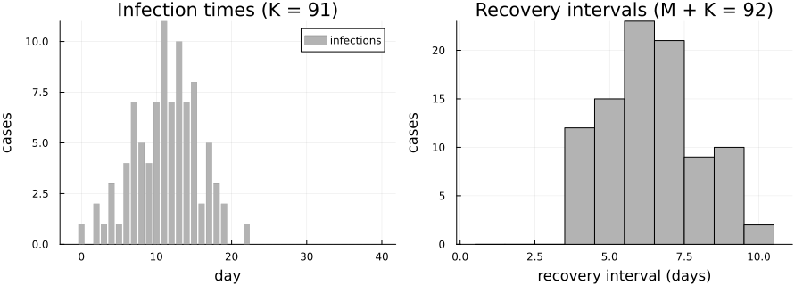
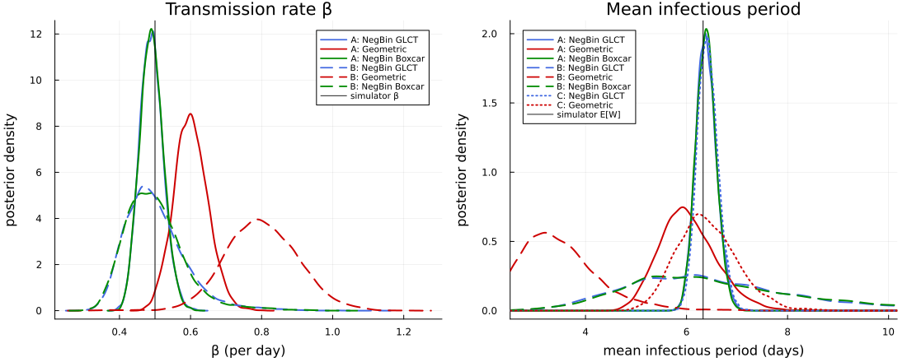
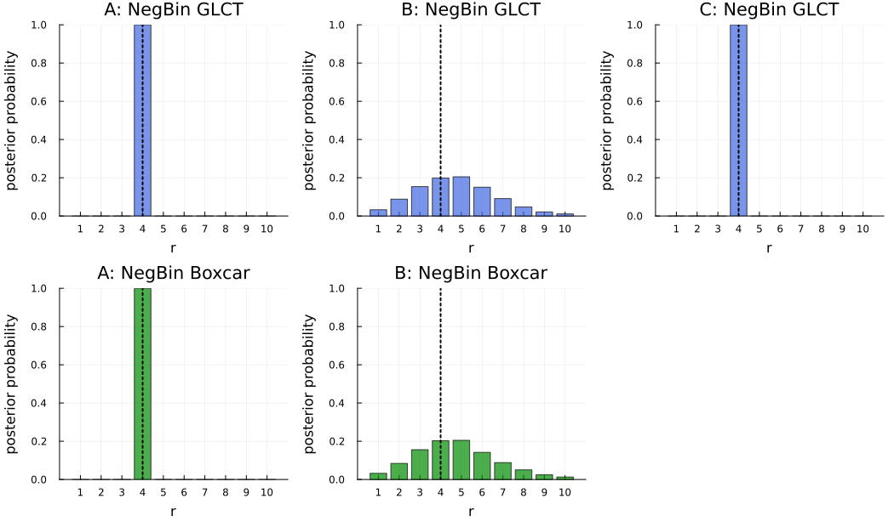
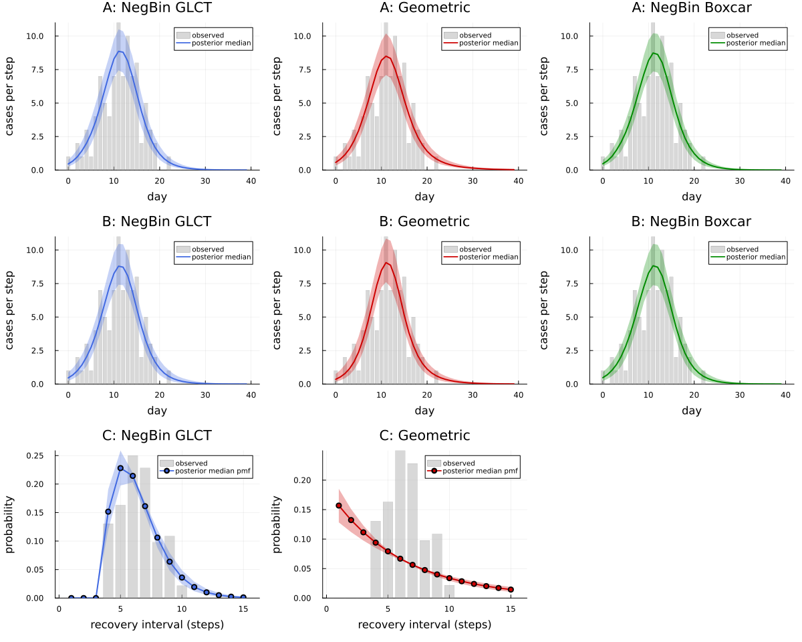

Data availability: what each likelihood term contributes
The output on this page was precomputed using the manuscript's MCMC settings and is displayed without being re-evaluated. To rerun it, see Reproducibility.
DDSA splits the log-likelihood of a line list into three parts: the infection-time term $\ell_I$ ($\text{Multinomial}(K, f)$), the recovery-interval term $\ell_R$ (a discrete phase-type infectious period), and the final-size term $\ell_\text{constr}$ ($K \sim \text{Binomial}(N, \tau)$). Here $K$ is the number of cases among the $N$ individuals at risk; a discrete-time SIR map gives the expected fraction infected $\tau$ and the distribution $f$ of infection times over the observation window (see the Guide).
Line lists are often incomplete: contact tracing may record infection times without follow-up on recovery, and hospital records may provide durations without specifying infection dates. This vignette measures what each term contributes by fitting one synthetic line list under three data-availability scenarios, each with three infectious-period (IP) models: a negative binomial (NegBin) IP propagated through the GLCT map, the same NegBin IP through a Boxcar (infection-age) map, and a geometric IP.
| Scenario | Observed data | Likelihood | Parameters |
|---|---|---|---|
| A: full | infection times, recovery intervals, final size | $\ell_I + \ell_R + \ell_\text{constr}$ | $\beta$, $\rho$, $p$, $r$ |
| B: infection times only | infection times, final size | $\ell_I + \ell_\text{constr}$ | $R_0$, $\mu$, $\rho$, $r$ (geometric: $\beta$, $\rho$, $p$) |
| C: recovery intervals only | recovery intervals | $\ell_R$ | $p$, $r$ |
Here $\beta$ is the transmission rate per day, $\rho$ the initially infected fraction, $p$ the per-stage progression probability, $r$ the number of NegBin stages ($r \equiv 1$ for the geometric IP), $\mu$ the mean IP and $R_0 = \beta\mu$ the reproduction number.
using DiscreteDynamicSurvivalAnalysis
using Distributions, Random, Statistics, DataFrames, Turing
using Plots, StatsPlots, Measures
const FULL = get(ENV, "DDSA_FULL", "false") == "true"
t_start = time()Inputs: one synthetic line list
The simulator uses an Erlang infectious period with continuous-time mean 4 days and $k = 4$ stages, in discrete time at $\Delta t = 1$ day with per-stage progression probability $1 - e^{-k\Delta t/(4\,\text{days})} = 1 - e^{-1}$. Discretisation lengthens the mean: the discrete infectious period $W$ has $E[W] \approx 6.33$ days. With $\beta = 0.5$ per day the implied reproduction number is $R_0 = \beta E[W] = 3.164$.
These discrete-time values are the targets for the posteriors below. simulate_linelist draws the final size $K$, the infection-time histogram and one recovery interval for each of the $K$ cases and the $M = 1$ initial infective.
dph_true = dph_erlang_from_mean(4, 4.0, 1.0) # k = 4 stages, continuous mean 4 d, Δt = 1 d
β_true, ρ_true, N, nsteps = 0.5, 0.01, 99, 40
sim = simulate_linelist(Xoshiro(1234), dph_true, β_true, ρ_true, N, nsteps)
data = sim.data
EW = mean(dph_true)
R0_true = β_true * EW
(K = data.final_size, EW = EW, R0 = R0_true, mean_interval = mean(data.recovery_intervals),
shortest_interval = minimum(data.recovery_intervals))(K = 91, EW = 6.327906827477306, R0 = 3.163953413738653, mean_interval = 6.413043478260869, shortest_interval = 4)p_inc = bar(0:(nsteps - 1), data.infection_counts; label = "infections", color = :gray70, linewidth = 0,
xlabel = "day", ylabel = "cases", title = "Infection times (K = $(data.final_size))")
p_rec = histogram(data.recovery_intervals; bins = 0.5:1:(maximum(data.recovery_intervals) + 0.5), label = "",
color = :gray70, xlabel = "recovery interval (days)", ylabel = "cases",
title = "Recovery intervals (M + K = $(length(data.recovery_intervals)))")
plot(p_inc, p_rec; layout = (1, 2), size = (900, 320), left_margin = 3mm, bottom_margin = 4mm)
Model configuration
All models use the manuscript's priors and guards. The NegBin models sum $r$ out of the likelihood over $r \in \{1, \dots, 10\}$ (Scenario C: up to the shortest observed interval, 4). NUTS samples the continuous parameters, and $r$ is drawn afterwards from its conditional posterior.
- Scenario A and the geometric model of Scenario B sample $(\beta, \rho, p)$; Scenario C samples only $p$. The mean IP is $\mu = r/p$.
- Scenario B (NegBin models) samples $R_0$ and $\mu$ directly (
parameter = :mean_ip,transmission = :R0), with $p = r/\mu$ and $\beta = R_0/\mu$. These keep the same meaning for every $r$, which the summed posterior needs to mix well. - The Boxcar models have $K_\text{age}$ infection-age classes and use the hazard of the NegBin distribution conditioned on $W \le K_\text{age}$ (
truncation = :condition). $K_\text{age}$ is the 99.9% quantile of the simulator's IP in Scenario A (15 days) and of the widest prior IP, a geometric with mean 30 days, in Scenario B (204 days).
guards = NumericalGuards(τ_bounds = (0.001, 0.999))
K_age = findfirst(k -> cdf(dph_true, k) ≥ 0.999, 1:500)
K_age_B = findfirst(k -> cdf(dph_negative_binomial(1, 1 / 30), k) ≥ 0.999, 1:500)
nb_r_max = 10
nb_r_max_C = minimum(data.recovery_intervals)
prA = (β = Uniform(1e-4, 2.5), ρ = Beta(1, N - 1), p = Beta(1, 1))
prB = (R0 = Uniform(0.5, 5.0), mean_ip = Uniform(1.0, 30.0), ρ = Beta(1, N - 1))
prC = (p = Beta(1, 1),)
inf_only = (:final_size, :infection_times)
specs = [
"A_negbin" => DDSAModel(infectious_period = NegBinGLCT(1:nb_r_max), priors = prA, population = N,
guards = guards),
"A_geometric" => DDSAModel(infectious_period = GeometricIP(), priors = prA, population = N, guards = guards),
"A_boxcar" => DDSAModel(infectious_period = NegBinBoxcar(1:nb_r_max, K_age; truncation = :condition),
priors = prA, population = N, guards = guards),
"B_negbin" => DDSAModel(infectious_period = NegBinGLCT(1:nb_r_max; parameter = :mean_ip), priors = prB,
transmission = :R0, population = N, guards = guards, terms = inf_only),
"B_geometric" => DDSAModel(infectious_period = GeometricIP(), priors = prA, population = N, guards = guards,
terms = inf_only),
"B_boxcar" => DDSAModel(infectious_period = NegBinBoxcar(1:nb_r_max, K_age_B; parameter = :mean_ip,
truncation = :condition),
priors = prB, transmission = :R0, population = N, guards = guards, terms = inf_only),
"C_negbin" => DDSAModel(infectious_period = NegBinGLCT(1:nb_r_max_C), priors = prC, terms = (:recovery,)),
"C_geometric" => DDSAModel(infectious_period = GeometricIP(), priors = prC, terms = (:recovery,)),
]
(K_age = K_age, K_age_B = K_age_B, nb_r_max_C = nb_r_max_C)(K_age = 15, K_age_B = 204, nb_r_max_C = 4)Fit
The manuscript settings are 4 chains of 2,000 draws after 1,000 NUTS adaptation steps (default_sampler), with 4,000 draws for the NegBin and Boxcar models of Scenario B, whose wide and correlated $(R_0, \mu)$ posterior needs more draws. Chains start from jittered data-based values (data_based_inits).
nchains = FULL ? 4 : 2
sampler = FULL ? default_sampler() : NUTS(250, 0.8; max_depth = 12, Δ_max = 1000.0)
ndraws(key) = FULL ? (key in ("B_negbin", "B_boxcar") ? 4000 : 2000) : 250
fits = Dict{String,DDSAFit}()
fit_seconds = Dict{String,Float64}()
for (i, (key, spec)) in enumerate(specs)
fit_seconds[key] = @elapsed fits[key] = fit_ddsa(Xoshiro(20261006 + i), spec, data; ndraws = ndraws(key),
nchains = nchains, sampler = sampler)
end
draws = Dict(key => posterior_draws(fit) for (key, fit) in fits)
fits["A_negbin"]DDSAFit(NegBinGLCT, 4 chains × 2000 draws, parameters: β, p, ρ, r)Results
Posterior medians and 95% credible intervals, with the mean IP and $R_0$ computed draw by draw. Medians are used because the geometric mean IP can have a long right tail under Scenario B. Targets: $\beta = 0.5$, $E[W] = 6.33$ days, $R_0 = 3.164$, $r = 4$ (the simulator's Erlang stages).
ci(x; digits = 3) = "$(round(median(x); digits)) [$(round(quantile(x, 0.025); digits)), $(round(quantile(x, 0.975); digits))]"
rposterior(d) = round.([mean(d.r .== r) for r in 1:nb_r_max]; digits = 2)
labels = Dict("negbin" => "NegBin GLCT", "geometric" => "Geometric", "boxcar" => "NegBin Boxcar")
results = DataFrame(
scenario = [first(k, 1) for (k, _) in specs],
model = [labels[split(k, "_")[2]] for (k, _) in specs],
β = [startswith(k, "C") ? "–" : ci(draws[k].β) for (k, _) in specs],
mean_ip = [ci(draws[k].mean_ip; digits = 2) for (k, _) in specs],
R0 = [startswith(k, "C") ? "–" : ci(draws[k].R0; digits = 2) for (k, _) in specs],
r = [occursin("geometric", k) ? "≡ 1" : startswith(k, "B") ? "P(r) = $(rposterior(draws[k]))" :
"mode $(argmax([count(==(r), draws[k].r) for r in 1:nb_r_max]))" for (k, _) in specs])| Row | scenario | model | β | mean_ip | R0 | r |
|---|---|---|---|---|---|---|
| String | String | String | String | String | String | |
| 1 | A | NegBin GLCT | 0.489 [0.43, 0.558] | 6.38 [6.02, 6.81] | 3.12 [2.74, 3.58] | mode 4 |
| 2 | A | Geometric | 0.6 [0.512, 0.698] | 5.99 [5.06, 7.26] | 3.6 [3.09, 4.23] | ≡ 1 |
| 3 | A | NegBin Boxcar | 0.49 [0.43, 0.557] | 6.38 [6.01, 6.79] | 3.12 [2.75, 3.56] | mode 4 |
| 4 | B | NegBin GLCT | 0.49 [0.372, 0.711] | 6.31 [3.77, 11.0] | 3.1 [2.45, 4.38] | P(r) = [0.03, 0.09, 0.15, 0.2, 0.21, 0.15, 0.09, 0.05, 0.02, 0.01] |
| 5 | B | Geometric | 0.798 [0.606, 1.005] | 3.39 [2.32, 5.46] | 2.7 [2.21, 3.53] | ≡ 1 |
| 6 | B | NegBin Boxcar | 0.49 [0.369, 0.712] | 6.34 [3.74, 11.37] | 3.12 [2.44, 4.51] | P(r) = [0.03, 0.08, 0.16, 0.2, 0.21, 0.14, 0.09, 0.05, 0.02, 0.01] |
| 7 | C | NegBin GLCT | – | 6.41 [6.04, 6.84] | – | mode 4 |
| 8 | C | Geometric | – | 6.37 [5.35, 7.69] | – | ≡ 1 |
The full posterior summary of one fit (Scenario B, NegBin GLCT), with effective sample sizes and $\hat R$ across chains:
DataFrame(posterior_summary(fits["B_negbin"]))| Row | parameter | mean | std | q2_5 | q50 | q97_5 | ess | rhat |
|---|---|---|---|---|---|---|---|---|
| Symbol | Float64 | Float64 | Float64 | Float64 | Float64 | Float64 | Float64 | |
| 1 | R0 | 3.1827 | 0.486032 | 2.44925 | 3.10337 | 4.38117 | 1868.32 | 1.00309 |
| 2 | mean_ip | 6.5973 | 1.8294 | 3.76599 | 6.31209 | 11.0022 | 1506.16 | 1.00492 |
| 3 | ρ | 0.0107606 | 0.00542987 | 0.00347357 | 0.00962616 | 0.0240132 | 2149.2 | 1.00331 |
| 4 | r | 4.71519 | 1.89985 | 1.0 | 5.0 | 9.0 | 2597.24 | 1.00313 |
| 5 | N | 99.0 | 0.0 | 99.0 | 99.0 | 99.0 | NaN | NaN |
| 6 | τ | 0.934189 | 0.0242455 | 0.879006 | 0.937259 | 0.971972 | 2390.95 | 1.0021 |
| 7 | p | 0.709352 | 0.202678 | 0.266411 | 0.744059 | 0.988675 | 6858.14 | 1.00063 |
| 8 | mean_ip_steps | 6.5973 | 1.8294 | 3.76599 | 6.31209 | 11.0022 | 1506.16 | 1.00492 |
| 9 | β | 0.501887 | 0.0862275 | 0.372054 | 0.489745 | 0.710561 | 1842.88 | 1.0043 |
Convergence of every fit: the largest $\hat R$ and smallest bulk ESS over the quantities of posterior_summary (constant quantities such as a known $N$ are skipped).
function convergence(fit)
rows = filter(r -> !isnan(r.rhat), posterior_summary(fit))
return (max_rhat = round(maximum(r.rhat for r in rows); digits = 3), min_ess = round(Int, minimum(r.ess for r in rows)))
end
DataFrame([merge((fit = k,), convergence(fits[k])) for (k, _) in specs])| Row | fit | max_rhat | min_ess |
|---|---|---|---|
| String | Float64 | Int64 | |
| 1 | A_negbin | 1.003 | 2918 |
| 2 | A_geometric | 1.001 | 2598 |
| 3 | A_boxcar | 1.001 | 3470 |
| 4 | B_negbin | 1.005 | 1506 |
| 5 | B_geometric | 1.002 | 1811 |
| 6 | B_boxcar | 1.004 | 1548 |
| 7 | C_negbin | 1.001 | 3079 |
| 8 | C_geometric | 1.002 | 2755 |
With full data (A), all three IP models recover the mean IP. The NegBin models also recover $\beta$ and put almost all posterior mass on $r = 4$. The geometric model is misspecified: with recovery intervals it still recovers the mean IP but inflates $\beta$ and so $R_0$. Without recovery intervals (B), $r$ is spread over several values and summing over it widens the $R_0$ and mean-IP posteriors; the geometric model halves the mean IP and compensates with a larger $\beta$. Recovery intervals alone (C) identify the IP sharply but say nothing about transmission.
Plots
Posterior densities of $\beta$ (Scenarios A and B) and of the mean infectious period (all scenarios). The mean-IP densities are evaluated on a window around the pooled 3–97% quantiles, because the geometric fit of Scenario B has rare draws of hundreds of days.
colors = Dict("negbin" => :royalblue, "geometric" => :red3, "boxcar" => :green4)
styles = Dict("A" => :solid, "B" => :dash, "C" => :dot)
style(k) = (color = colors[split(k, "_")[2]], linestyle = styles[first(k, 1)], linewidth = 2,
label = "$(first(k, 1)): $(labels[split(k, "_")[2]])")
"Kernel density of `x` on `window` (draws outside it keep their weight)."
function wdensity!(p, x; window, kwargs...)
kd = StatsPlots.KernelDensity.kde(x; boundary = window, npoints = 2048,
bandwidth = StatsPlots.KernelDensity.default_bandwidth(x))
plot!(p, kd.x, kd.density; kwargs...)
end
p_β = plot(xlabel = "β (per day)", ylabel = "posterior density", title = "Transmission rate β")
for (k, _) in specs
startswith(k, "C") || density!(p_β, draws[k].β; style(k)...)
end
vline!(p_β, [β_true]; color = :black, linewidth = 1, label = "simulator β")
pooled = reduce(vcat, [draws[k].mean_ip for (k, _) in specs])
lo, hi = quantile(pooled, 0.03), quantile(pooled, 0.97)
xl = (max(0.0, lo - max(0.06 * (hi - lo), 0.5)), hi + max(0.06 * (hi - lo), 0.5))
p_ip = plot(xlabel = "mean infectious period (days)", ylabel = "posterior density",
title = "Mean infectious period", xlims = xl, legend = :topleft)
for (k, _) in specs
wdensity!(p_ip, draws[k].mean_ip; window = (max(0.0, xl[1] - 1), xl[2] + 1), style(k)...)
end
vline!(p_ip, [EW]; color = :black, linewidth = 1, label = "simulator E[W]")
plot(p_β, p_ip; layout = (1, 2), size = (1100, 440), legendfontsize = 7, left_margin = 5mm, bottom_margin = 5mm)
Posterior of $r$ (the dotted line is the simulator's $k = 4$):
rbars = map(["A_negbin", "B_negbin", "C_negbin", "A_boxcar", "B_boxcar"]) do k
bar(1:nb_r_max, [mean(draws[k].r .== r) for r in 1:nb_r_max]; color = colors[split(k, "_")[2]], alpha = 0.7,
legend = false, ylims = (0, 1), xticks = 1:nb_r_max, xlabel = "r", ylabel = "posterior probability",
title = style(k).label)
vline!([4]; color = :black, linestyle = :dot, linewidth = 2)
end
plot(rbars...; layout = (2, 3), size = (1050, 620), left_margin = 4mm, bottom_margin = 4mm)
Posterior predictive checks. Scenarios A and B: the expected new infections per day $N\tau f$ of the forward map at posterior draws (posterior_predictive, parameter uncertainty only; the Boxcar fits re-run the Boxcar map with their own $K_\text{age}$). Scenario C: the posterior infectious-period pmf against the relative frequencies of the observed intervals (recovery_predictive). The draws are pooled over all chains.
npp = FULL ? 400 : 100
ppc_panels = Any[]
for (i, (k, _)) in enumerate(specs)
c = colors[split(k, "_")[2]]
if startswith(k, "C")
rp = recovery_predictive(fits[k]; ndraws = npp)
push!(ppc_panels, plot(rp; seriescolor = [:gray70 c], title = style(k).label, legend = :topright))
else
pp = posterior_predictive(Xoshiro(100 + i), fits[k]; ndraws = npp)
push!(ppc_panels, plot(pp; seriescolor = [:gray70 c], title = style(k).label, xlabel = "day",
legend = :topright))
end
end
push!(ppc_panels, plot(framestyle = :none)) # C with a Boxcar map is the same model as C NegBin
plot(ppc_panels...; layout = (3, 3), size = (1200, 960), legendfontsize = 7, left_margin = 4mm,
bottom_margin = 4mm)
Substituting your own data or model
- Data. Build a
LineListfrom your own event times withlinelist(missingfor unknown times), or directly from binned counts with theLineListconstructor. A line list without recovery intervals corresponds to Scenario B, and one with only intervals to Scenario C: choosetermsto match the data you have. - Infectious-period model. Swap
NegBinGLCT,NegBinBoxcarorGeometricIP; widen or narrowr_support; for a Boxcar model chooseK_agefrom the widest IP the prior allows. - Population. Give a known
N, or a rangeN_min:N_max(or anNGrid) to sum an unknown population out of the final-size term.
mydata = linelist(onset_days, removal_days; nsteps = 60)
spec = DDSAModel(infectious_period = NegBinGLCT(1:8), population = 500:5000,
priors = (β = Uniform(1e-4, 2.5), ρ = Beta(1, 100), p = Beta(1, 1)))
fit = fit_ddsa(Xoshiro(1), spec, mydata)
DataFrame(posterior_summary(fit))Runtime
Wall time of each fit in this run (seconds, including compilation for the first fits), and of the whole vignette:
DataFrame(fit = first.(specs), seconds = [round(fit_seconds[k]; digits = 1) for (k, _) in specs],
draws_per_chain = [ndraws(k) for (k, _) in specs], chains = nchains)| Row | fit | seconds | draws_per_chain | chains |
|---|---|---|---|---|
| String | Float64 | Int64 | Int64 | |
| 1 | A_negbin | 11.0 | 2000 | 4 |
| 2 | A_geometric | 2.1 | 2000 | 4 |
| 3 | A_boxcar | 4.3 | 2000 | 4 |
| 4 | B_negbin | 10.1 | 4000 | 4 |
| 5 | B_geometric | 0.5 | 2000 | 4 |
| 6 | B_boxcar | 13.0 | 4000 | 4 |
| 7 | C_negbin | 3.9 | 2000 | 4 |
| 8 | C_geometric | 1.5 | 2000 | 4 |
(settings = FULL ? "manuscript" : "reduced (code check, not for results)", threads = Threads.nthreads(),
total_seconds = round(time() - t_start; digits = 1))(settings = "manuscript", threads = 10, total_seconds = 54.8)